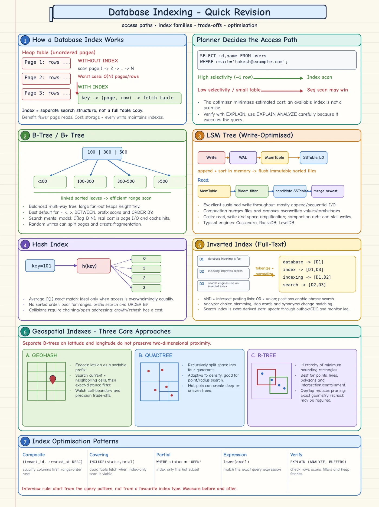

Topic · Database Indexing
How Database Indexes Work
An index is a separate access path from search values to rows. Its real win is fewer page reads - paid for with storage and slower writes.


Quick Revision
- An index maps searchable values → row locators; the benefit is fewer page reads, not fewer comparisons.
- B+ tree is the default: equality, ranges, prefix, ordering; high fan-out keeps it shallow.
- Hash index: fast exact equality only - no ranges, prefix, or
ORDER BY. - The optimizer may still pick a sequential scan - prove it with
EXPLAIN (ANALYZE, BUFFERS). - Every index costs storage, write work, WAL, cache pressure, and maintenance.
How a lookup works
- Without an index - sequential scan: read every table page, inspect rows. Cost is page access and cache misses.
- With an index -
key → index entry → row locator → table page. Entry = indexed key + locator + metadata. - Locator is engine-specific - PostgreSQL points to heap tuples; InnoDB secondaries store the clustered PK; LSM engines reconcile across memory and files.
- Complexity - unindexed O(N) vs B-tree O(logB N) + row fetch, with B in the hundreds.
index size ≈ rows × (key + locator + overhead) ÷ fill factor e.g. 100M rows × ~56 B ÷ 0.70 ≈ 8 GB
The optimizer decides
- Options - sequential scan, index scan, index-only scan, bitmap scan, parallel scan, scan + sort.
- Index wins - for highly selective predicates (few matching rows).
- Scan wins - small table, many matches, scattered rows, stale stats, expression/operator mismatch.
- Read the plan - scan type, estimated vs actual rows,
Index CondvsFilter, sort nodes, buffers, heap fetches. - Bitmap scan - collect row locations from one or more indexes, combine, read pages in order. Between index scan and seq scan.
EXPLAIN ANALYZE executes the statement - wrap writes in a rolled-back transaction.Clustered vs secondary, and hash
- Clustered - defines row storage order (row at the leaf). One per table. Great locality for its ranges; wide/mutable keys bloat every secondary index.
- Secondary - separate structure pointing to a locator or clustered key. Many allowed; non-covered columns need an extra fetch.
- Engines differ - InnoDB clusters by PK; PostgreSQL tables are heaps even with a PK.
- Good primary key - stable, narrow, unique, immutable. Random UUIDs hurt locality; time-ordered IDs create a hot right edge.
- Hash index -
key → h(key) → bucket; ~O(1) equality, but no order. Use only for pure equality with a proven advantage; otherwise B-tree.
Clarifying questions → decisions
| Ask | Example answer | Decision |
|---|---|---|
| Top query shapes? | User by email; latest posts by user | Unique B-tree on email; (user_id, created_at DESC) |
| Equality, range, text, or location? | Equality + time range | B+ tree, key order matches range and sort |
| How many rows match? | 1-50 of 100M | Index valuable; LIMIT + cursor |
| Read/write ratio? | 95% writes, append-heavy | Consider LSM; budget compaction |
| Search freshness? | 2 s lag OK | DB + outbox/CDC → inverted index |
| Returned columns? | Four narrow columns | Evaluate covering index |
| Data distribution? | ACTIVE = 98% of rows | Skip full status index; partial index on the rare subset |
| Distance model? | Earth distance, 5 km | Geographic type + exact spherical predicate |
Trade-offs
| Choice | Benefit | Cost / risk |
|---|---|---|
| No secondary index | Fastest writes, least storage | Large scans for selective reads |
| Hash index | Very fast exact equality | No order, range, prefix, or ORDER BY |
| Clustered index | Locality and range access for one order | One order only; key affects every secondary |
Failure modes
- Index exists but seq scan runs - too many matches, small table, stale stats → read the plan, refresh stats, or accept the scan.
- Over-indexed table, slow writes - drop unused/redundant indexes.
- Estimates far from actual - skew/correlation → refresh or extend statistics, rewrite query.
- Missing FK/join index - joins and cascading deletes scan the child table.
- New index causes latency or replica lag - online/concurrent build, headroom, throttle, monitor replicas.
Interview practice
Answer aloud, then reveal.
Blinkit SDE-1 (Sep 2026): how does indexing work internally and why is it faster?
Tables live in pages; a B+ tree holds sorted keys + row locators with large fan-out, so a lookup follows a few pages root → leaf, then fetches the row. Cost: storage and write maintenance. The optimizer may still scan - verify with EXPLAIN.
Tripjack SDE-1 (Aug 2026) / Arcesium (2025): clustered vs non-clustered.
Clustered stores rows in key order (one per table, great range locality). Non-clustered is separate and points to a locator/clustered key (many allowed, extra fetch). InnoDB clusters by PK; PostgreSQL uses heaps.
Tide SDE-3 (2025): indexing, query optimization, B-tree vs B+ tree.
Start from query shape and plan. B+ tree keeps routing keys inside and records at linked leaves for range scans. Composite: equality first, then range/order; keep it narrow; cover only when measured; check estimates, filters, sorts, buffers.
Freshworks Lead (2024): what is database indexing?
An auxiliary structure mapping keys to rows to avoid full scans for selective queries. B+ tree default; hash, spatial, full-text for special cases. Costs storage and writes - add from real query patterns.
Why might a database ignore an existing index?
Cheaper scan predicted: too many matches, small table, scattered rows, stale stats, mismatched expression/operator, or the index can't give the needed order.
Why is LIKE '%term%' hard for a B-tree?
No known prefix to seek to. Use trigram or full-text indexes, or a search engine.
What happens when an indexed column is updated?
Old entry removed/invalidated, new one added. MVCC keeps old versions until cleanup; LSM appends a new version and compacts later.